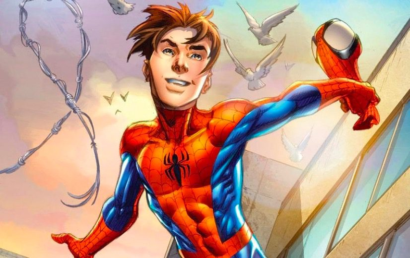
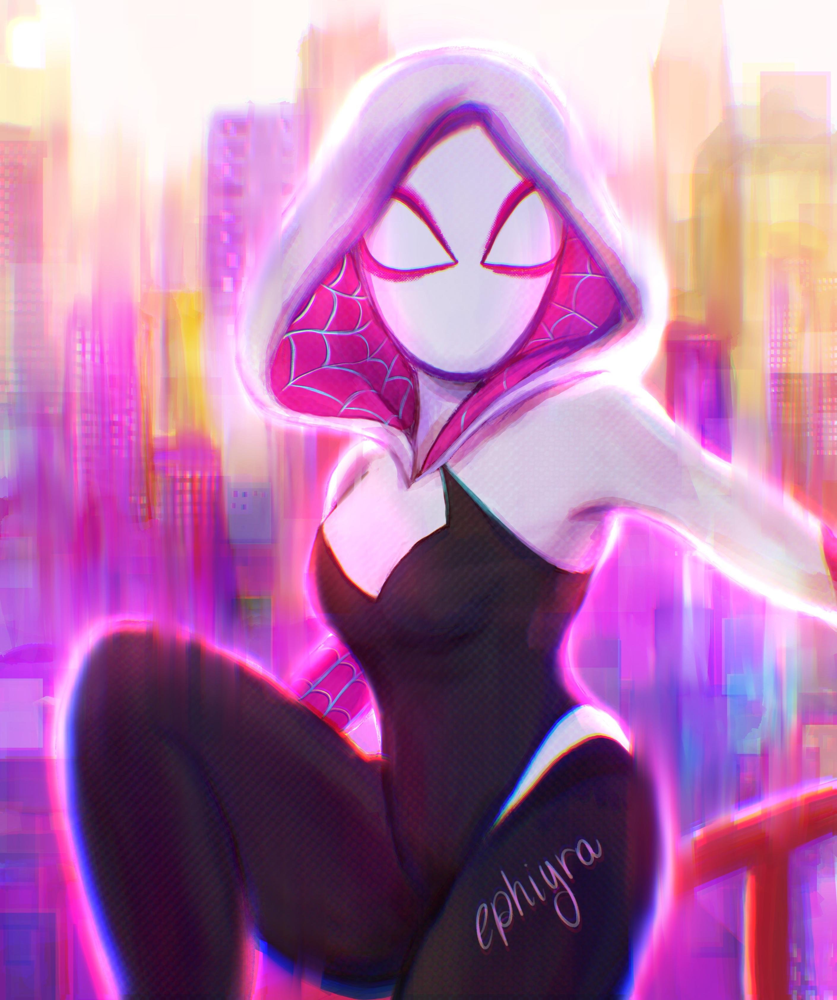
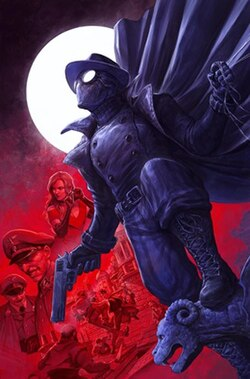
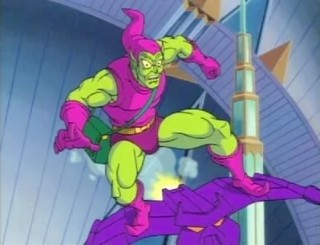
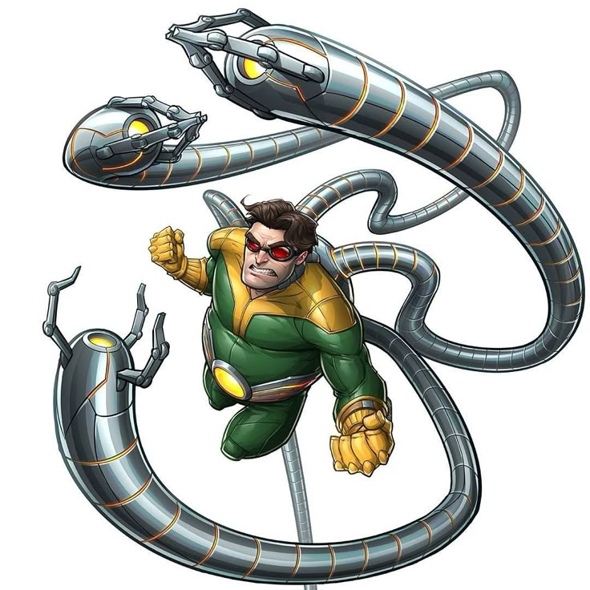
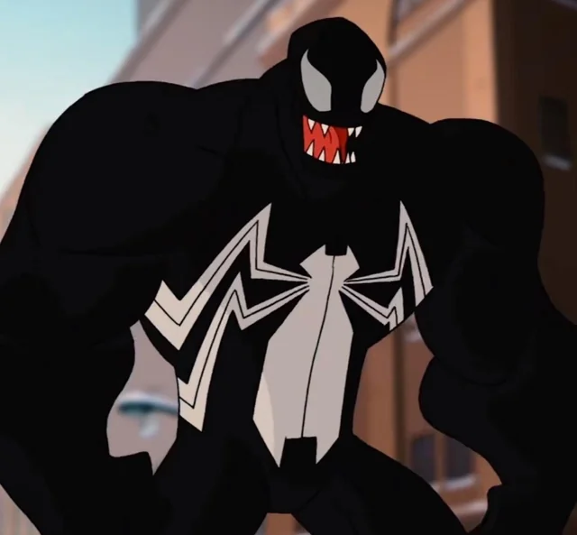

🕸️
O Aranhaverso é uma anomalia temporal que permite a coexistência de diversas variantes do Homem-Aranha. Abaixo, catalogamos as cinco versões mais estáveis encontradas até o momento, cada uma com habilidades únicas e trajes adaptados para suas respectivas realidades.

Peter Parker

Miles Morales

Spider-Gwen

Miguel O'Hara

Spider-Noir
🕸️
Galeria de Vilões
Não apenas de heróis vive o multiverso. As ameaças aqui listadas representam o maior perigo para a estabilidade da rede da vida e do destino. Estes vilões possuem registros criminais em múltiplas dimensões.

Duende Verde

Doutor Octopus

Venom
🕸️
Dados do Multiverso
| Ator | Universo |
|---|---|
| Tobey Maguire | Terra-96283 |
| Andrew Garfield | Terra-120703 |
| Ameaça | Nível de Perigo |
|---|---|
| Sexteto Sinistro | Extremo |
| Rei do Crime | Alto |
🕸️